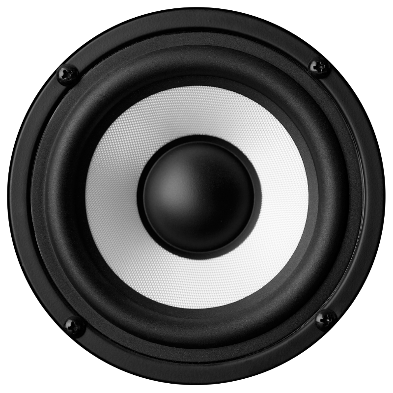
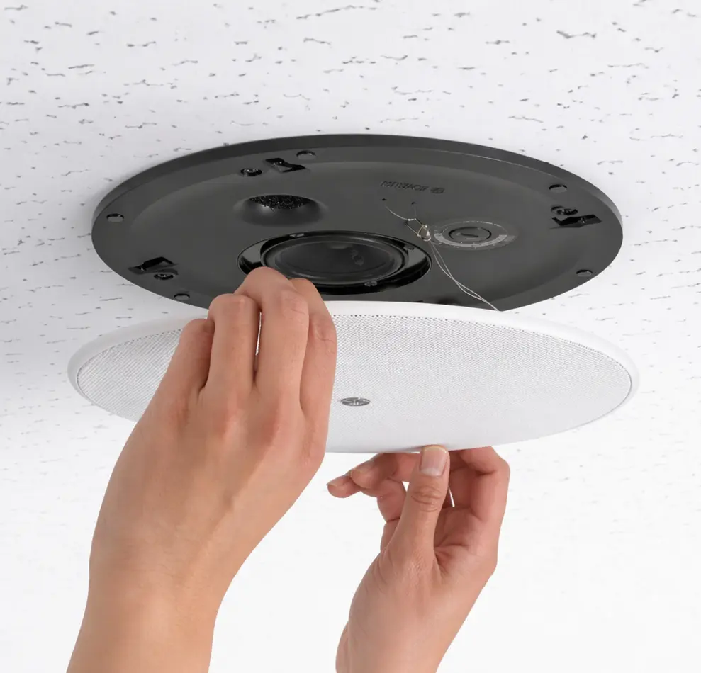

Ráno v kuchyni
Hudba může běžet jen tam, kde dává smysl, bez rušení ostatních částí domu.
Multizónový audio systém navrhujeme tak, aby byl kvalitní, nenápadný a jednoduchý na používání. Každá zóna má vlastní charakter, ale celý systém funguje jako jeden celek.

Nejde jen o reproduktory ve stropě. Důležitá je logika zón, zdrojů, ovládání i návaznost na scénáře celého domu.

Typické situace poslechu
Dobře navržené multizónové audio nemá působit technicky. Má být přirozenou součástí domu, s jasnou logikou zón a jednoduchým ovládáním.
Hudba může běžet jen tam, kde dává smysl, bez rušení ostatních částí domu.
Jednotlivé zóny fungují samostatně a reagují podle způsobu používání prostoru.
Ovládání zůstává jednoduché i ve chvíli, kdy má audio jen doplňovat atmosféru interiéru.
Vybrané zóny lze propojit tak, aby ozvučení působilo přirozeně v navazujících částech domu.
Hudbu lze rozšířit i do dalších částí objektu bez narušení základní logiky systému.
Spuštění hudby, změna zóny i hlasitosti je rychlé a přehledné bez složitého nastavování.
Technický standard
Hudba má v domě fungovat nenápadně, kvalitně a bez složitého ovládání. Důležitá je souhra zón, scén a technické stability.
Každý prostor má mít odpovídající zvuk i způsob ovládání.
Hudba musí být dostupná okamžitě bez složitých kroků navíc.
Audio musí fungovat v návaznosti na světlo, stínění i další režimy domu.
Řešení má být dobře dokumentované a dlouhodobě udržitelné.
Další zóny nebo zdroje lze doplňovat bez chaosu v systému.
Po předání musí být ovládání srozumitelné a připravené pro běžné používání.
ZAČNĚME HUDBOU, KTERÁ BUDE SOUČÁSTÍ DOMU